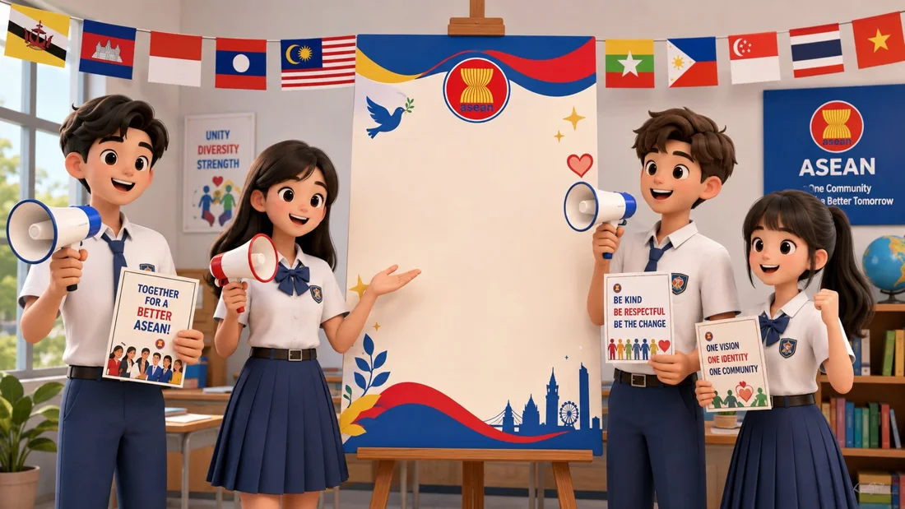
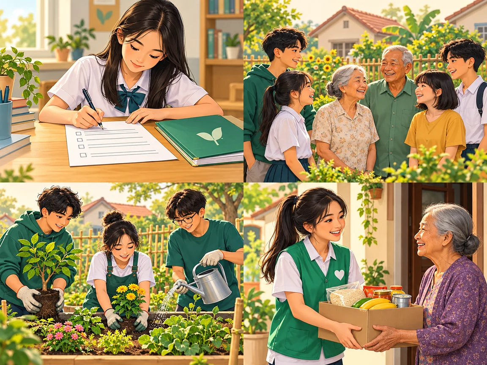
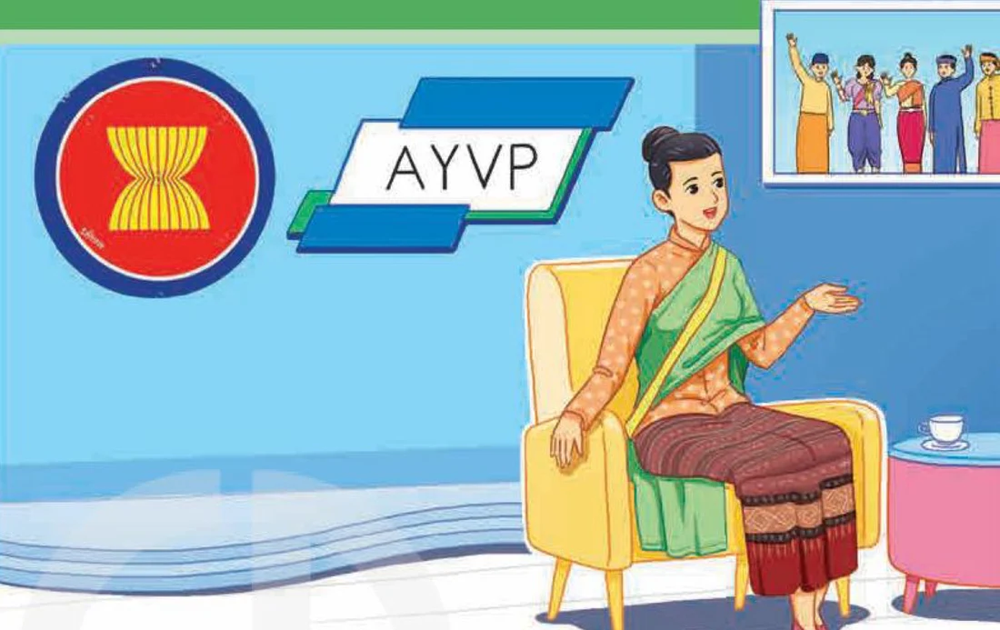

At the AYVP office
Lesson 1 — Getting started
4Talk about the ASEAN Youth Volunteer Programme
- 🗺️
name the ten ASEAN countries
- 📚
use words about volunteering
- 🎧
understand a conversation about AYVP
- 🎭
role-play asking for information
Warm-up
Map quiz
5 minutesWhat country is it?
- 🗺️
Look
Look at the shape of the country.
- ✋
Raise your hand
Guess the country — 1 point.
- 🏆
Bonus
All correct? Your group gets a bonus!
New words
Volunteering in ASEAN
11 minutesWhat is AYVP?

AYVP connects young people in ASEAN through volunteering and community projects.
How can young people join it?

apply
(v) /əˈplaɪ/ nộp đơn, ứng tuyểncommunity
(n) /kəˈmjuːnəti/ cộng đồngcontribution
(n) /ˌkɒntrɪˈbjuːʃn/ sự đóng gópvolunteer
(n, v) /ˌvɒlənˈtɪə(r)/ tình nguyện viên; tình nguyệnPractice
Mai and Ms Pang · Tasks 1–4
20 minutesAt the AYVP office

What can you see? the ASEAN logo, AYVP, a woman in an office
Who are the speakers? What are they discussing? Mai and Ms Pang · the AYVP programme
At the AYVP office
Mai: Good afternoon. My name’s Mai Nguyen. Are you Ms Pang? You replied to my email and invited me to visit your office.
Ms Pang: Yes, I’m Ms Pang. It’s nice to meet you, Mai. So how did you hear about us?
At the AYVP office
Mai: My cousin was an AYVP volunteer. He often said taking part in the programme was an experience he would never forget.
Ms Pang: Glad to hear that. The main goals of AYVP are promoting youth volunteering and helping the development of the ASEAN community.
Mai: What can I do to prepare for the programme?
At the AYVP office
Ms Pang: Well, to become an AYVP volunteer, you must be qualified for the programme, and this depends on the themes for the year.
Mai: What are the areas covered by AYVP?
Ms Pang: There are eight themes. I suggest checking our website to find out this year’s themes.
Mai: How are volunteers selected?
At the AYVP office
Ms Pang: To be selected, you should be over 18. Then you may need to propose a community project related to the theme. And we’ll probably interview you to make sure you speak English well and are very keen on participating in the programme.
Mai: That doesn’t sound too difficult. Thanks so much for meeting me.
Ms Pang: You’re welcome.
Underline the evidence
- Mai is a member of the ASEAN Youth Volunteer Programme. FALSE It was her cousin.
- One of the aims of AYVP is to help young people volunteer. TRUE
Underline the evidence
- Mai can only find last year’s themes on the AYVP’s website. FALSE She can find this year’s themes.
- Mai can apply to join the AYVP when she turns 18. FALSE She should be over 18.
Words from the conversation
1. volunteer c
2. qualified d
3. development b
4. goals a
a. things that you hope to achieve
b. the process of becoming bigger and better
c. someone who does a job without payment
d. having the training or experience to do a particular job
Look for the -ing forms
1. Taking part in the programme was an unforgettable experience for Mai’s cousin.
2. The main goals of AYVP are promoting youth volunteering and helping the development of the ASEAN community.
3. Ms Pang suggested checking their website.
4. Mai thanked Ms Pang for meeting her.
Verb + -ing = gerund
Gerund as subject
Taking part in the programme was unforgettable.
Gerund as object
Ms Pang suggested checking their website.
Production
Role-play at the AYVP office
6 minutesAsk for information about AYVP
🧑💼 AYVP staff
Answer questions about the goals, the themes and how volunteers are selected.
🧑🎓 Students
Ask: What are the goals? · How can I prepare? · How are volunteers selected?
I suggest checking … · To be selected, you should … · Thanks so much for meeting me.
AYVP and you
- 📚
3
new words I remember
- 💡
1
thing I learnt about AYVP
- 🙋
?
Would you like to join AYVP? Why?
Homework
1. Learn the new words by heart.
2. Find one fact about an ASEAN country for the Project (Lesson 8).
3. Get ready for Lesson 2 — Language.